TESS outreach products
The TESS GI office has developed some new outreach products for the community. We hope that you enjoy them and can make use of them for your own events.
| Early Career Pamphlet | Citizen Science Pamphlet |
|---|---|
| 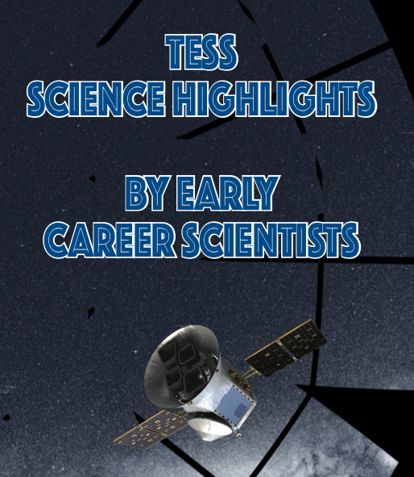 | 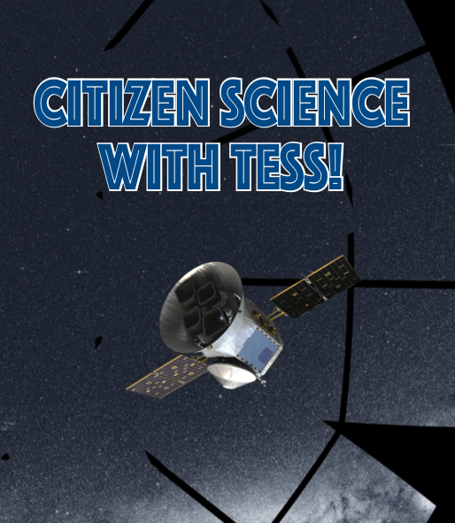 |
| Northern Vista | Old Faithful |
|---|---|
| 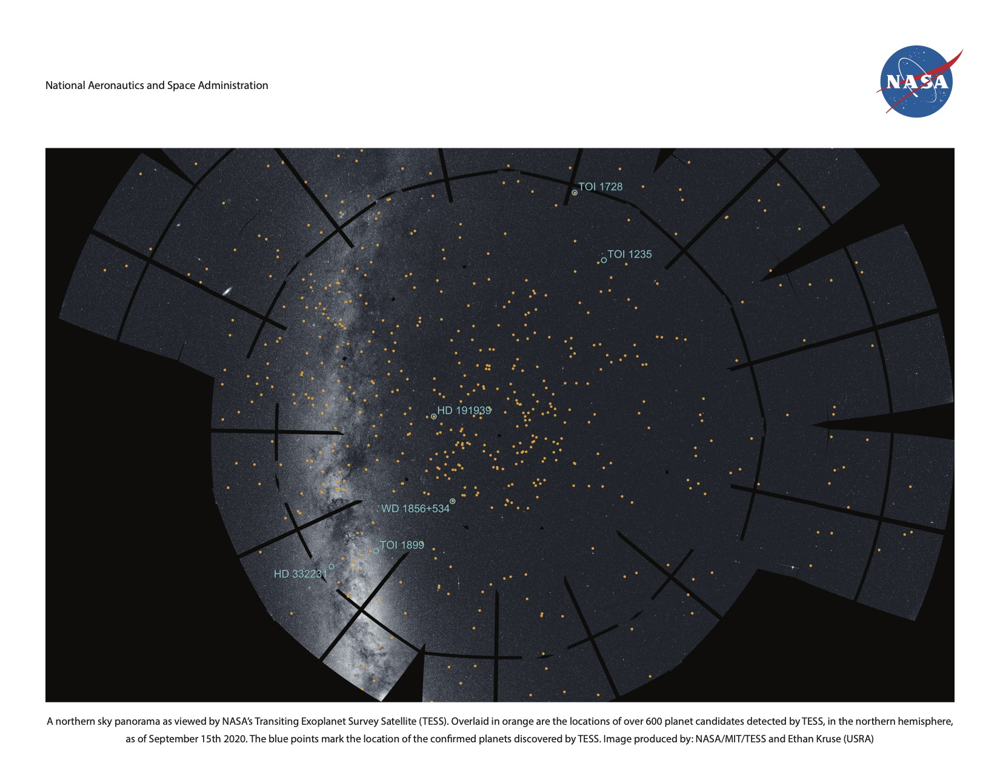 | 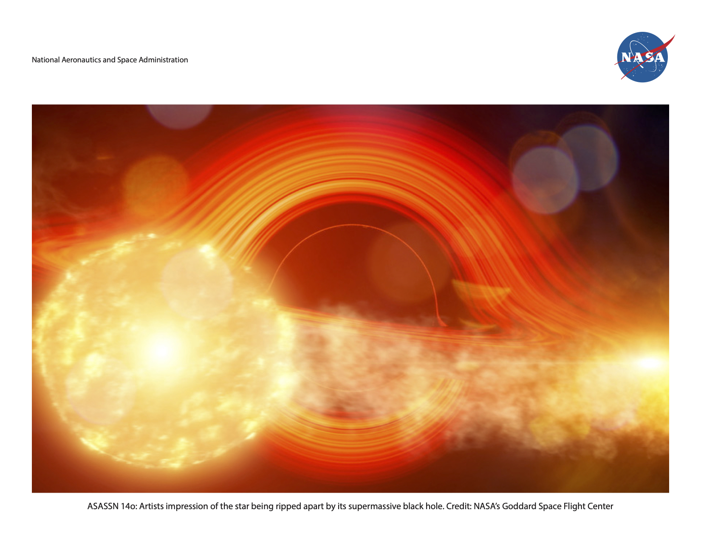 |
| River of Young Stars | Triple System |
|---|---|
| 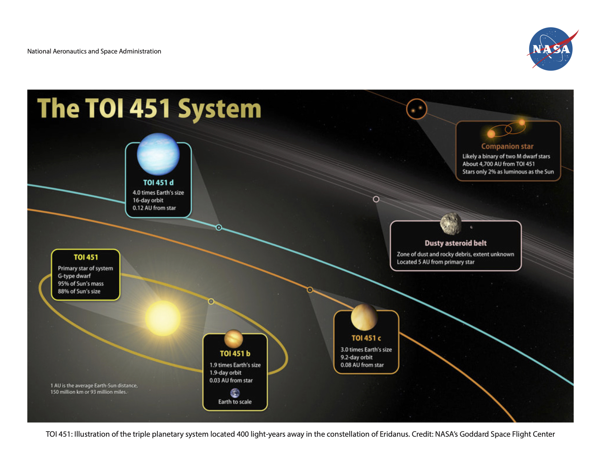 | 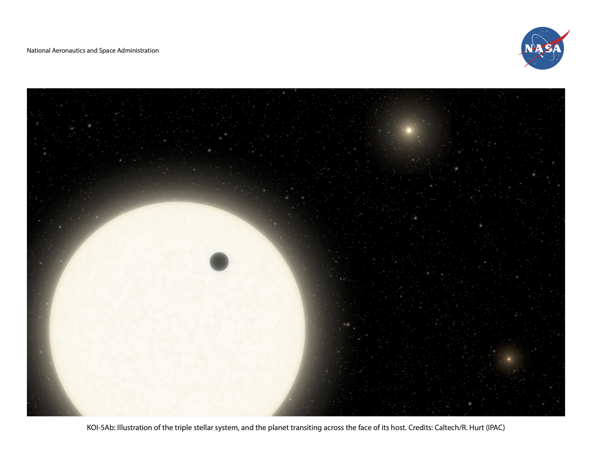 |
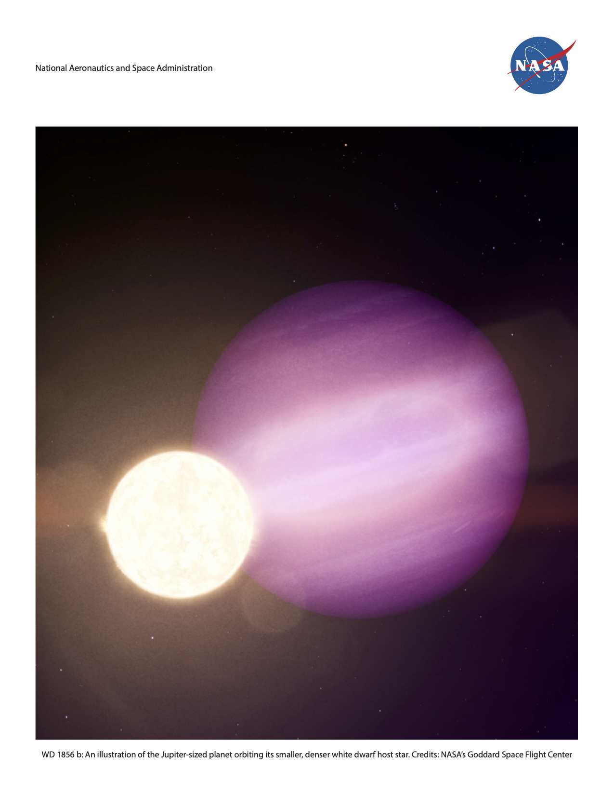
TESS gallery
A gallery of TESS videos, animations, still images, and other resources are maintained by NASA Goddard's Scientific Visualization Studio (SVS). Visit the TESS gallery to access the latest graphics that are downloadable in a wide range of formats.
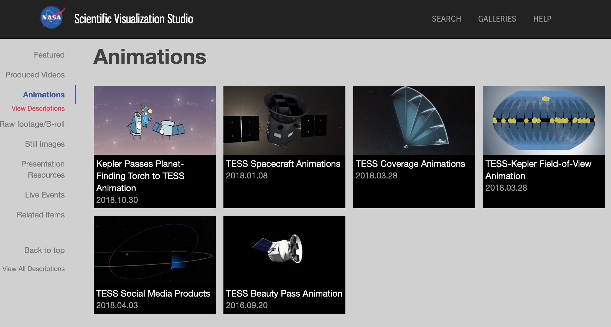
Sample page from Goddard's Scientific Visualization Studio TESS gallery. Image Credit: NASA
TESS model files
You can download files to create your very own TESS. This includes a paper model and files to create a 3D printed TESS spacecraft. All the details are on our Github site.
| 3D printed model | Paper model |
|---|---|
| 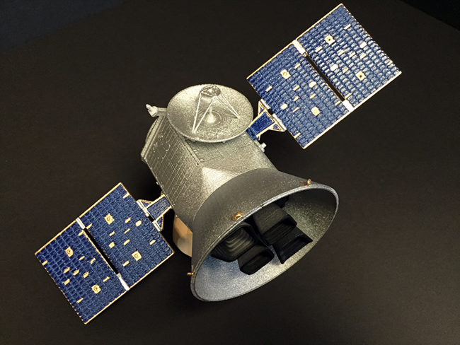 | 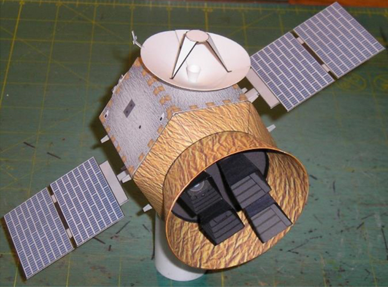 |
ABCs of Exoplanets
The ABCs of Exoplanets are a set of exoplanet-related graphics developed for educational purposes, and can be downloaded in various forms here.
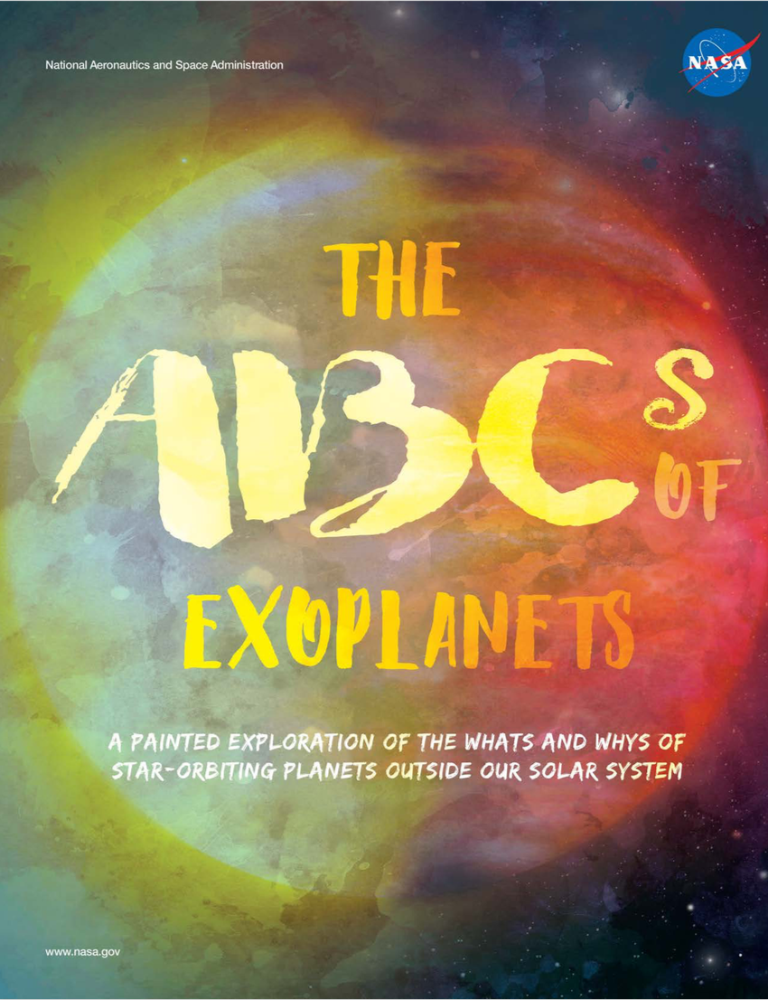
TESS ABCs of exoplanets are available to download here. Image Credit: NASA
TESS Exoplanet Coloring Book
The Exoplanet Coloring Book is another resource that can be used for educational purposes. It can be downloaded via the link below.
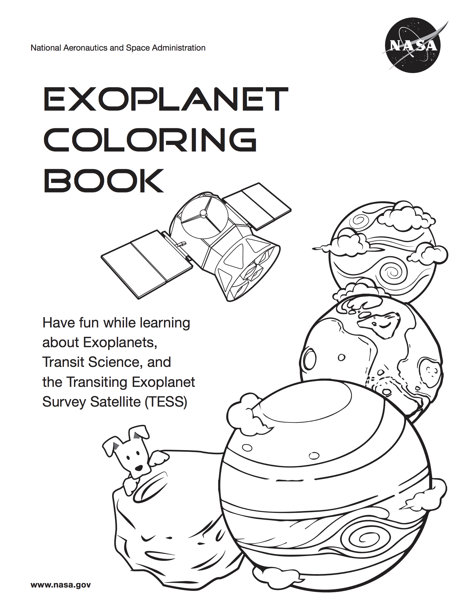
TESS Exoplanet Coloring Book is available to download here. Image Credit: NASA
TESS Science Writer's Guide
The TESS Science Writer's Guide was developed to provide general information on the TESS mission for use by science writers and others interested in TESS. This guide was first developed for a Science Writer's Workshop held at the American Astronomical Society meeting in January 2018.
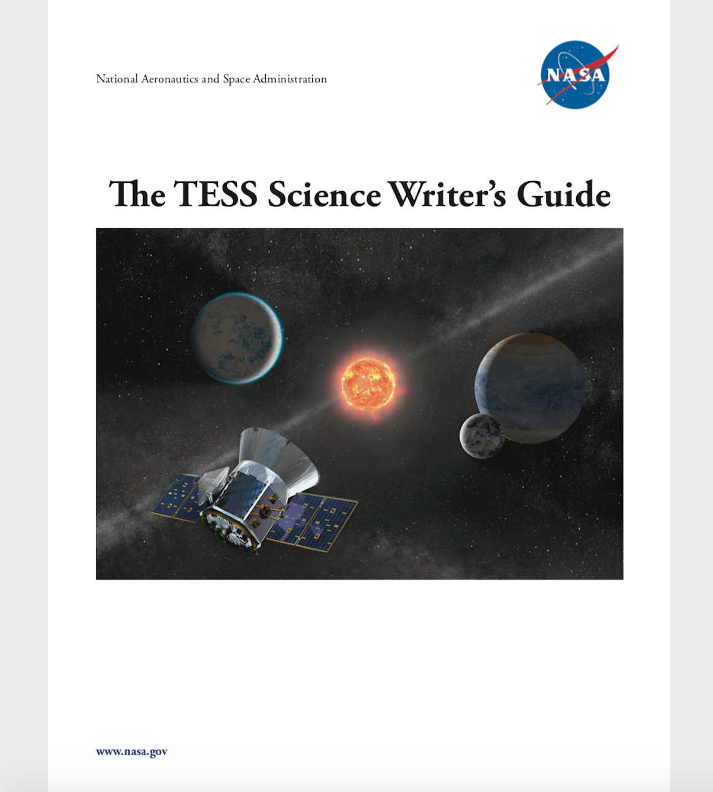
TESS Science Writer's Guide is available to download here. Image Credit: NASA
Citizen scientists
Want to discover your own exoplanets using TESS data? Try Planet Hunters or Planet Patrol. You'll find more NASA citizen science projects at science.nasa.gov/citizenscience
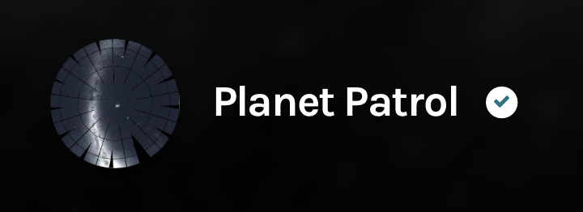 | 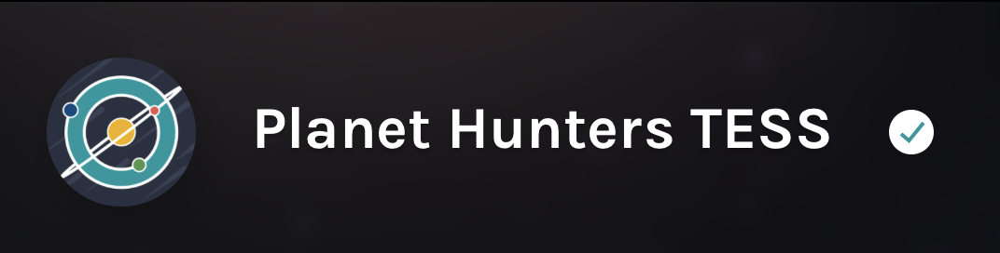
Additional exoplanet resources
NASA's exoplanet page contains a variety of useful information and resources that can be used for education and outreach. The multimedia link allows the user to download various posters, videos, and infographics.
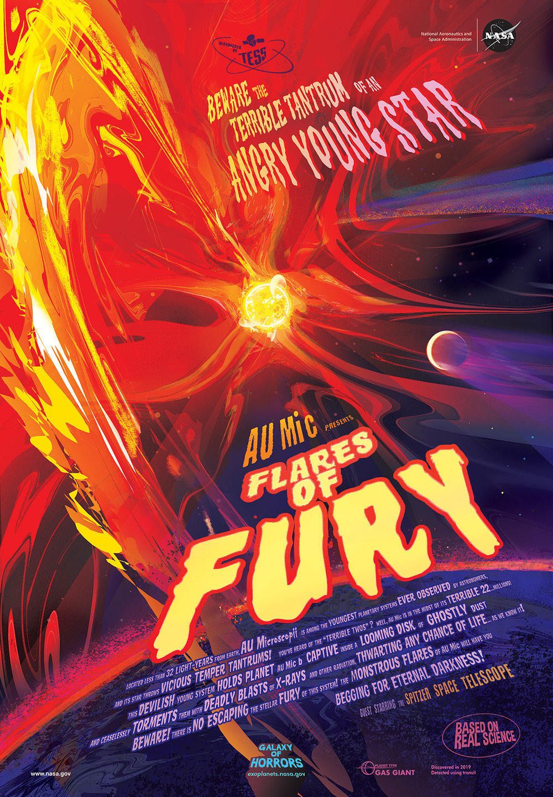
NASA's AU Microscopii feature poster, avalible for download here. Image Credit: NASA-JPL/Caltech